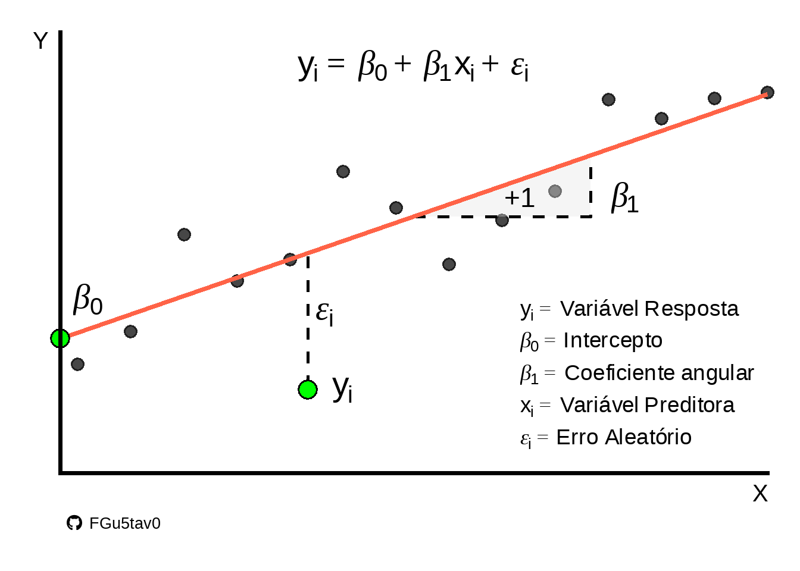
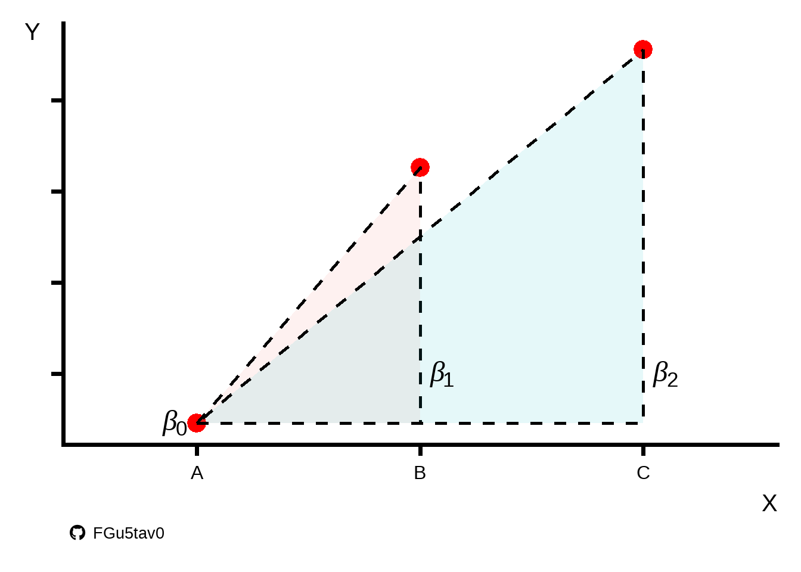
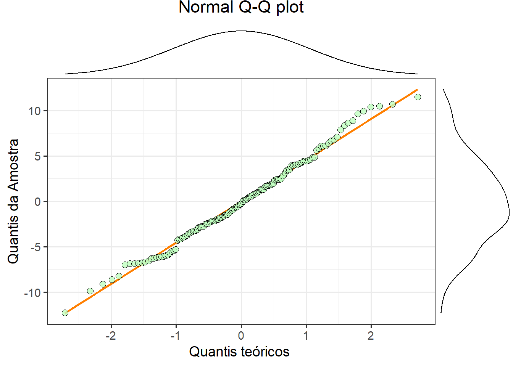
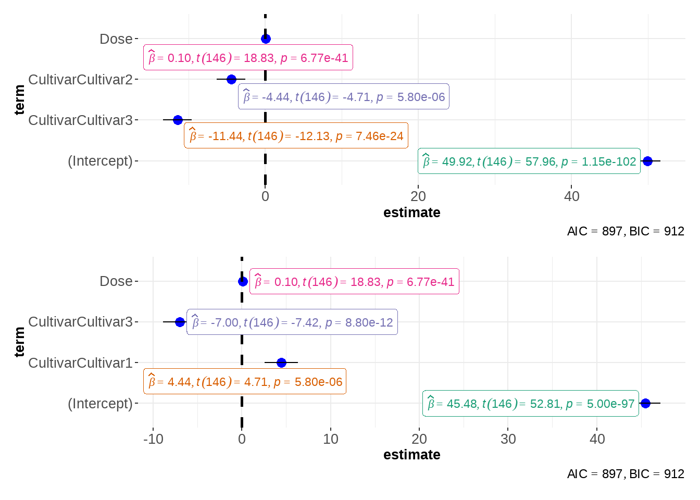

1 Aprendi assim!
“Os dados foram analisados por meio da análise de variância e, quando significativo, foram realizadas comparações de médias por Tukey para dados categóricos e regressão para dados quantitativos”
Essa é a lógica que eu aprendi durante minha graduação e que se manteve até pelo menos meu mestrado. E não é uma lógica errada, longe disso, mas é muito limitada e responde uma parte dos problemas.
Essa abordagem me transmitia a ideia, ou a sensação, de que era somente dessa forma que os estudos eram realizados. É claro que essa era uma limitação minha ao perceber dessa maneira, mas tenho conduzido algumas pesquisas que me indicam que há um coletivo de pessoas que também pensam assim (isso fica para outro momento).
Neste texto, mostro como a regressão linear pode ser aplicada a dados de natureza contínua e/ou categórica. Além disso, inclui um tutorial para a implementação em R.
2 A regressão
Francis Galton foi quem desenvolveu o conceito de regressão por volta de 1885. A regressão é utilizada para verificar a relação entre duas ou mais variáveis, de modo que uma delas pode ser descrita, explicada ou predita pelas demais.
A variável que será explicada (\(y\)) é chamada de variável dependente, enquanto a variável que a explica (\(x\)) é denominada variável independente. Isso não significa necessariamente que há uma relação de causa e efeito entre \(x\) e \(y\), mas para a análise, considera-se essa dependência entre as variáveis.
Para o \(y\) em uma regressão linear, é necessário que tenhamos dados do tipo contínuo. No entanto, para o \(x\), podemos utilizar tanto dados contínuos quanto categóricos.
Uma regressão linear simples pode ser descrita pela equação:
\[y=\beta_{0}+\beta_{1}x+\epsilon\] Onde, \(y\) é a variável dependente; \(\beta_{0}\) é o intercepto do modelo (ponto que corta o eixo \(y\)); \(\beta_{1}\) é o coeficiente angular; \(x\) é a variável independente e \(\epsilon\) é o erro do modelo (Figura 1).
2.1 Como ela se ajusta?
Para encontrar a curva com o melhor ajuste, é utilizado o método dos mínimos quadrados. Isso significa que o método “encontra” qual das curvas retorna o menor valor para a soma dos quadrados. Essa soma dos quadrados é obtida calculando a diferença entre o valor observado e o valor predito, elevando essa diferença ao quadrado e, somando tudo.
Em outras palavras, esse método encontra “a curva que fica mais próxima dos dados observados”. É claro que a quantidade de matemática e estatística por trás de todo esse método é brutal. Aqui apresento apenas uma explicação superficial.
A Figura 2 mostra uma curva (\(a\)) com inclinação zero, que representa o intercepto na média dos valores de \(y\). Já em \(b\), temos o melhor ajuste possível para uma regressão linear. A primeira curva pode ser considerada um palpite inicial para explicar os dados, ou seja, utilizando o valor da média. A segunda é um avanço, onde \(y\) passa a assumir valores dependendo de \(x\).

A animação abaixo mostra a reta de regressão assumindo diversos valores para \(\beta_{0}\) e \(\beta_{1}\). É importante observar que ela começa com uma reta na média de \(y\) e evolui até alcançar retas para além da mais adequada. Os valores da soma dos quadrados indicam que há uma inclinação que minimiza esse valor, enquanto inclinações anteriores ou posteriores fazem com que a soma dos quadrados aumente.

2.2 Variável categórica na regressão
Essa é a parte que mais me chama atenção.
Para que uma variável categórica entre na análise de regressão, ela passa por uma pequena transformação, tornando-se uma variável dummy.
Por definição, uma variável dummy assume apenas os valores \(0\) ou \(1\), indicando a presença ou ausência de uma categoria. O número de variáveis dummy criadas é sempre igual a \(n-1\), onde \(n\) é o número de categorias da variável.
Se tivermos \(3\) grupos em nossa variável, então teremos \(2\) variáveis dummy, como mostrado na Tabela 1. Nota-se que um dos grupos sempre terá o valor \(0\) em ambas as dummies, pois serve como referência, e os demais grupos serão comparados a ele. Na Tabela 1, o grupo “A” é a referência inicial, mas para as demais comparações, é possível alterar o grupo de referência.
| Grupo | Dummy (D1) | Dummy (D2) |
|---|---|---|
| A (ref) | 0 | 0 |
| B | 1 | 0 |
| C | 0 | 1 |
Dummy em programas estatísticos
A criação das variáveis dummy é totalmente automatizada nos programas estatísticos. Logo, você não precisa criá-las manualmente. No entanto, como exercicio, vale a pena rodar uma regressão criando as próprias dummies e ver que o resultado é exatamente o mesmo que o do computador.
A equação de regressão geral pode ser descrita conforme Equação 1. Também podemos fazer uma equação para cada grupo (Equação 2, Equação 3 e Equação 4).
\[y=\beta_{0}+\beta_{1}D1+\beta_{2}D2+\epsilon_{i} \tag{1}\]
Equação grupo A:
\[y=\beta_{0}+\epsilon_{i} \tag{2}\]
Equação grupo B:
\[y=\beta_{0}+\beta_{1}D1+\epsilon \tag{3}\]
Equação grupo C:
\[y=\beta_{0}+\beta_{2}D2+\epsilon \tag{4}\]
Agora, repare como a Equação 2 é descrita apenas pelo intercepto, pois a variável de grupo assume o valor \(0\) em todas as dummies (Tabela 1). Já para os demais grupos aparece na equaçao as dummies em que o valor \(1\) é atribuído.
A interpretação de uma regressão com variáveis dummy é, basicamente, a diferença de média entre os grupos (semelhante a um teste de Tukey). Na Figura 3, podemos ver as médias dos grupos A, B e C e os respectivos \(\beta\)s, que indicam a diferença entre elas. Essa diferença pode ser entendida como uma diferença angular, pois, se as médias são diferentes, forma-se um ângulo (\(\neq 0\)) entre as médias.

2.3 Requisitos/indicadores de qualidade para a regressão linear
Como um professor disse uma vez:
O grande perigo é a pessoa apenas saber fazer uma regressão.
Essa frase é uma crítica às pessoas que apenas sabem montar um modelo e sair interpretando. Uma interpretação útil surge de uma regressão bem feita, e, para isso, é necessário conhecer a qualidade do modelo gerado. Abaixo estão os principais critérios para avaliar como seu modelo se comporta.
2.3.1 As observações devem ser independentes
Esse requisito diz que o valor de uma observação não pode ter influência no valor de outra observação.
2.3.2 As variáveis preditivas não devem possuir alta correlação
Também chamada de multicolinearidade, a alta correlação entre as variáveis independentes é um aspecto importante a ser considerado. Variáveis com alta correlação podem causar diversos problemas, como distorção dos resultados e interpretações espúrias.
2.3.3 Homocedasticidade e normalidade dos resíduos
A homocedasticidade é semelhante à homogeneidade de variâncias testada na ANOVA. No entanto, a homocedasticidade diz respeito à variância dos erros do modelo (\(\epsilon\)), que deve ser constante em toda a escala ou nos níveis da variável \(x\).
Já a normalidade diz respeito aos erros do modelo, que devem ser aproximadamente normais.
3 Exemplo de regressão
Agora, vamos fazer um exemplo de regressão com variáveis contínuas e discretas no mesmo modelo. Depois vamos interpretar cada variável e verificar a qualidade do modelo.
Para o exemplo vamos considerar 2 variáveis dependentes que são 5 doses de algum fertilizante e outra como 3 cultivares de qualquer planta. Já a variável dependete será a produtividade dessa planta (Tabela 2).
Nossa pergunta será: “As variáveis dose e cultivar são preditores da produtividade da cultura?”.
3.1 Especificando o modelo
Nosso modelo teórico e sem interação pode ser representado como:
\[y= \beta_0 + \beta_1*dose + \beta_2*cultivar + \epsilon\]
3.2 Resultado
A Tabela 3 mostra os resultados da regressão. Na tabela, a primeira coluna representa o intercepto ou a variável \(x\). A coluna “Beta” apresenta os coeficientes ajustados, seguida pelo intervalo de confiança para o coeficiente e, por fim, o valor de p.
| Characteristic | Beta | 95% CI1 | p-value |
|---|---|---|---|
| (Intercept) | 49.9 | 48.2, 51.6 | <0.001 |
| Cultivar | |||
| Cultivar1 | — | — | |
| Cultivar2 | -4.44 | -6.30, -2.58 | <0.001 |
| Cultivar3 | -11.4 | -13.3, -9.58 | <0.001 |
| Dose | 0.103 | 0.092, 0.113 | <0.001 |
| No. Obs. | 150 | ||
| R² | 0.775 | ||
| 1 CI = Confidence Interval | |||
3.3 Interpretação
O modelo criado (Tabela 4) tem um \(R^2\) de \(0,77\), o que é considerado um valor “bom”. Todas as variáveis \(x\) foram significativas (\(p<0,05\)). A interpretação de cada variável é:
Cultivar: A Cultivar2 tem uma produtividade em média de 4,44 unidades a menos que a Cultivar1. Já a Cultivar3 tem produtividade média de 11,4 unidades a menos que a Cultivar1. Alterando a referência para a Cultivar2, observa-se que a Cultivar3 tem produtividade média de 7 unidades a menos que a Cultivar2
Dose: Com relação a dose, a cada aumento de uma unidade temos um aumento na produtividade de 0,103 unidades.
| Characteristic |
Refe Cultivar1
|
Refe Cultivar2
|
||||
|---|---|---|---|---|---|---|
| Beta | 95% CI1 | p-value | Beta | 95% CI1 | p-value | |
| (Intercept) | 49.9 | 48.2, 51.6 | <0.001 | 45.5 | 43.8, 47.2 | <0.001 |
| Cultivar | ||||||
| Cultivar1 | — | — | 4.44 | 2.58, 6.30 | <0.001 | |
| Cultivar2 | -4.44 | -6.30, -2.58 | <0.001 | — | — | |
| Cultivar3 | -11.4 | -13.3, -9.58 | <0.001 | -7.00 | -8.87, -5.14 | <0.001 |
| Dose | 0.103 | 0.092, 0.113 | <0.001 | 0.103 | 0.092, 0.113 | <0.001 |
| No. Obs. | 150 | |||||
| R² | 0.775 | |||||
| 1 CI = Confidence Interval | ||||||
3.4 Indicadores de qualidade
3.4.1 Outliers
Na regressão linear, uma das maneiras de verificar se há dados influentes para o modelo é por meio da distância de Cook. Existem diferentes interpretações em relação aos valores de corte para considerar um valor influente. Aqui, utilizo o valor de \(1\) como ponto de corte. Há discussões sobre o uso de valores limite para diagnósticos, mas, de qualquer forma, utilizar o limite de \(1\) já é melhor que não fazer uma avaliação de outliers.
Podemos observar na Figura 4 que nenhum ponto se aproxima do valor de \(1\), portanto, aparentemente, não temos pontos discrepantes que possam prejudicar o modelo.

3.4.2 Normalidade dos resíduos e homocedasticidade
A Figura 5 mostra o QQ-plot dos resíduos. O ideal é que os pontos estejam dispostos perfeitamente em cima da reta, mas isso é praticamente impossível nas análises do dia a dia. Portanto, quanto mais próximos da linha, melhor. Não temos um ponto de corte ou métrica de qualidade específicos para o QQ-plot. Buscamos o melhor ajuste possível, dados os dados que temos.
Verificamos que há alguns desvios em relação à linha, mas, no geral, o resultado é satisfatório. Com isso, podemos concluir que os resíduos são aproximadamente normais. Além disso, tudo indica que não temos problemas com a homocedasticidade.

3.4.3 Multicolinearidade
A tolerância entre as variáveis foi de \(1\) (Tabela 5) o que significa uma boa tolerância. Em geral, acima de \(0,80\) já temos variáveis que se toleram no modelo.
| Term | VIF | Tolerance |
|---|---|---|
| Cultivar | 1 | 1 |
| Dose | 1 | 1 |
O teste de Durbin-Watson é utilizado para verificar a autocorrelação entre os resíduos da regressão. O valor ideal desse teste é \(2\), o que indica a ausência de autocorrelação. Se o valor for maior ou menor que \(2\), há indícios de autocorrelação positiva ou negativa, respectivamente.
A análise do Durbin-Watson (Tabela 6) mostra um valor de \(2,08\), ou seja, é aproximadamente \(2\) e indica que não temos autocorrelação.
| z | p | Method | Alternative |
|---|---|---|---|
| 2.08806 | 0.61766 | Durbin-Watson test | true autocorrelation is greater than 0 |
3.5 Representação gráfica do modelo
Na Seção 3.3 vimos quais foram os efeitos significativos do modelo, já na Seção 3.4 observamos que o modelo está adequado e explica bem os dados. Agora, criamos uma visualização gráfica para apresentar melhor os resultados. Poderia ter sido feito um gráfico com as médias dos grupos de cultivares, mostrando o intervalo de confiança e uma regressão com as doses, mas preferi representar dessa forma.

4 Regressão vs ANOVA
Parece que essa frase gera um conflito dentro da agronomia. Aparenta que usamos as técnicas para coisas totalmente diferentes, mas no final das contas uma ANOVA é um caso particular da regressão linear. Todos os resultados obtidos em um teste de ANOVA serão encontrado em um modelo de regressão linear.
Resultado da ANOVA
Realizando uma ANOVA para comparação
Tabela anova
Df Sum Sq Mean Sq F value Pr(>F)
Cultivar 2 3327 1664 74.77 <2e-16 ***
Dose 1 7889 7889 354.55 <2e-16 ***
Residuals 146 3249 22
---
Signif. codes: 0 '***' 0.001 '**' 0.01 '*' 0.05 '.' 0.1 ' ' 1Normalidade
# A tibble: 1 × 3
variable statistic p
<chr> <dbl> <dbl>
1 Produtividade 0.991 0.482Homogeneidade
# A tibble: 1 × 4
df1 df2 statistic p
<int> <int> <dbl> <dbl>
1 2 147 0.0904 0.914Comparações por tukey
Cultivar emmean SE df lower.CL upper.CL .group
Cultivar3 48.7 0.667 146 47.4 50.0 a
Cultivar2 55.7 0.667 146 54.4 57.1 b
Cultivar1 60.2 0.667 146 58.9 61.5 c
Confidence level used: 0.95
P value adjustment: tukey method for comparing a family of 3 estimates
significance level used: alpha = 0.05
NOTE: If two or more means share the same grouping symbol,
then we cannot show them to be different.
But we also did not show them to be the same. Regressão das doses
Call:
lm(formula = Produtividade ~ Dose, data = dados)
Residuals:
Min 1Q Median 3Q Max
-15.2724 -4.7458 0.1992 4.6481 15.7107
Coefficients:
Estimate Std. Error t value Pr(>|t|)
(Intercept) 44.622242 0.942674 47.34 <2e-16 ***
Dose 0.102559 0.007697 13.32 <2e-16 ***
---
Signif. codes: 0 '***' 0.001 '**' 0.01 '*' 0.05 '.' 0.1 ' ' 1
Residual standard error: 6.666 on 148 degrees of freedom
Multiple R-squared: 0.5454, Adjusted R-squared: 0.5423
F-statistic: 177.5 on 1 and 148 DF, p-value: < 2.2e-165 Referências
Field, A., Miles, J., & Field, Z. (2012). Discovering statistics using R. SAGE Publications.